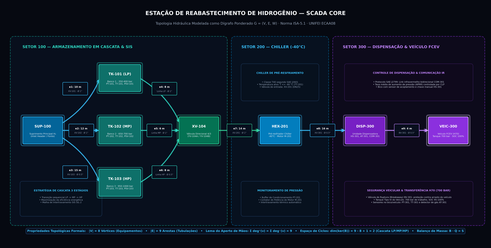

Dígrafo ponderado da malha física, matrizes de fluxo, segurança por corte de arestas, algoritmos em grafos (Dijkstra, BFS/DFS, Euler, TSP) e integração SCADA em tempo real.
Fundamentação matemática para supervisão, roteamento seguro e otimização operacional em tempo real.
O projeto desenvolve o núcleo de decisão do SCADA Core utilizando a teoria dos grafos para modelar a malha física de alta pressão, equipamentos de processo e fluxos operacionais de uma estação de hidrogênio voltada a veículos movidos a célula de combustível (FCEV).
A planta envolve armazenamento em cascata de 3 estágios, condicionamento criogênico e transferência a 700 bar. O SCADA Core avalia a topologia do dígrafo G = (V, E, W), executa o roteamento de pressão por Dijkstra em tempo real, isola vazamentos instantaneamente reponderando arestas afetadas e otimiza a inspeção física e a logística viária.
Do suprimento externo até o bico do veículo, o fluxo de H2 percorre três subsistemas industriais mapeados no dígrafo:
Cilindros em cascata: baixa pressão (TK-101 ≤ 400 bar), média (TK-102 ≤ 700 bar) e alta (TK-103 ≤ 1000 bar). Válvulas de corte rápido XV-101 a XV-103 e seletora direcional XV-104.
Trocador criogênico HEX-201 com pré-resfriamento a ≤ −40 °C (Classe T40 SAE J2601), evitando sobreaquecimento do tanque veicular durante o abastecimento rápido.
Medição mássica Coriolis, acoplamento de segurança breakaway (BV-301), bico dispensador DISP-300 com link infravermelho IrDA (SAE J2799) e tanque veicular 700 bar (VEIC-300).
Dígrafo ponderado da tubulação de alta pressão, matrizes de incidência e conservação vetorial de massa
Topologia física completa interligando os 8 equipamentos de processo através dos 3 setores industriais (100, 200 e 300):

A conservação de massa em cada nó do dígrafo é formalizada por equações algébricas no ciclo do SCADA:
| Vértice (V) | Grau (in/out) | Balanço Instantâneo de Massa |
|---|---|---|
| SUP-100 | 0+ / 3− | − (qe1 + qe2 + qe3) = −Sin |
| TK-101 (LP) | 1+ / 1− | qe1 − qe4 = dMTK101/dt |
| TK-102 (MP) | 1+ / 1− | qe2 − qe5 = dMTK102/dt |
| TK-103 (HP) | 1+ / 1− | qe3 − qe6 = dMTK103/dt |
| XV-104 | 3+ / 1− | (qe4 + qe5 + qe6) − qe7 = 0 |
| HEX-201 | 1+ / 1− | qe7 − qe8 = 0 |
| DISP-300 | 1+ / 1− | qe8 − qe9 = 0 |
| VEIC-300 | 1+ / 0− | + qe9 = dMveic/dt |
Onde B ∈ {−1, 0, 1}8 × 9 é a matriz nó-arco, q é o vetor de vazões e s é o vetor de injeção/extração.
Algoritmos de busca em largura e profundidade para isolamento de segurança e diagnóstico de ciclos
Aplicações complementares de exploração de grafos integradas ao ciclo de varredura do SCADA:
| Critério | BFS (Busca em Largura) | DFS (Busca em Profundidade) |
|---|---|---|
| Estrutura de Dados | Fila FIFO (First-In, First-Out) | Pilha LIFO / Recursão |
| Garantia Formal | Menor número de arestas (saltos topológicos) | Exploração exaustiva e conectividade estrutural |
| Complexidade | O(|V| + |E|) | O(|V| + |E|) |
| Aplicação no SCADA | Determinar o conjunto mínimo de válvulas a fechar no isolamento | Detecção de ciclos fechados e reciclo indevido de gás |
Ao disparar alarme AT-101, a BFS varre o grafo em camadas concêntricas a partir da falha, identificando o menor corte de bloqueio.
Classificação formal de arestas. Arestas de retorno em ramos operacionais sinalizam recirculação e acionam alarme de trip.
Caminho mínimo por Dijkstra na cascata de pressão e reconfiguração instantânea perante vazamentos
O protocolo SAE J2601 é executado via Dijkstra como cálculo de menor caminho no dígrafo ponderado:
| Estágio de Pressão | Rota Hidráulica no Dígrafo | Distância Total | Status no SCADA Core |
|---|---|---|---|
| LP — TK-101 (350–400 bar) | SUP-100 → TK-101 → XV-104 → HEX-201 → DISP-300 → VEIC-300 | 52 m | ✓ ROTA ÓTIMA INICIAL |
| MP — TK-102 (650–700 bar) | SUP-100 → TK-102 → XV-104 → HEX-201 → DISP-300 → VEIC-300 | 52 m | Contingência 1 |
| HP — TK-103 (950–1000 bar) | SUP-100 → TK-103 → XV-104 → HEX-201 → DISP-300 → VEIC-300 | 57 m | Contingência 2 |
Isolamento dinâmico em tempo real e identificação formal de pontos únicos de falha na infraestrutura:
| Trecho Hidráulico | É Ponte (Cut-Edge)? |
|---|---|
| SUP-100 → TK-101 / 102 / 103 | ✗ Não (3 rotas redundantes) |
| XV-104 → HEX-201 | ⚠️ SIM — PONTE CRÍTICA |
| HEX-201 → DISP-300 | ⚠️ SIM — PONTE CRÍTICA |
| DISP-300 → VEIC-300 | ⚠️ SIM — PONTE CRÍTICA |
Inspeção estrutural por PIG (Euler), amostragem de pureza por AGV (TSP) e logística por DAG
Varredura ultrassônica periódica para detecção de microtrincas e fragilização por hidrogênio em dutos:
Todos os vértices da malha de inspeção possuem grau par ⇒ Grafo conexo Euleriano comprovado formalmente.
Complexidade linear O(|E|), construindo a rota de varredura sem redundância de trecho e com retorno garantido à base.
O robô móvel AGV coleta amostras para ensaio de pureza de hidrogênio em 5 pontos da planta (norma SAE J2719):
| Método Empregado | Sequência de Visitação do AGV | Distância Total | Desempenho no SCADA |
|---|---|---|---|
| Vizinho Mais Próximo (NN) | LAB → TK-101 → TK-102 → TK-103 → HEX-201 → DISP-300 → LAB | 280 m | Solução inicial (cruzamento) |
| Refinamento 2-Opt | LAB → TK-101 → TK-102 → TK-103 → DISP-300 → HEX-201 → LAB | 260 m | ✓ OTIMIZADO (−7,1%) |
Ordenação topológica formal para garantia de precedência no protocolo de abastecimento (SAE J2601 / SAE J2799):
| Etapa DAG | Intertravamento Booleano (Etapa 01) | Ação Topológica no SCADA (Etapa 02) | Grau de Entrada |
|---|---|---|---|
| 1. Acoplamento | Trava inserida (BV_LOCKED == 1) |
Nó raiz do DAG → Libera verificação inicial | in-deg = 0 → Fila |
| 2. Handshake & Teste | IRDA_OK == 1 & Pulso 50 bar estanque |
Validação física antes de liberar abertura de válvulas | in-deg = 1 → Aprovado |
| 3. Chiller T40 & Cascata | TT_201 ≤ -40 °C & Rampa LP→MP→HP |
Dijkstra calcula caminho ótimo nas pressões da cascata | in-deg = 1 → Ativo |
| 4. Purga & Desacople | 700 bar atingido & PRESS_MANG < 2 bar |
Nó terminal do DAG → Despressurização segura da linha | Conclusão do DAG |
Elimina nós de grau zero sequencialmente. Se restar algum nó, detecta deadlocks ou ciclos ilícitos e aborta.
Camada Hidráulica (dutos) + Segurança SIS (chamas/gás) + Robótica (PIG/AGV) integradas no mesmo núcleo matemático.
Um único ciclo de varredura (100 ms) integra o grafo topológico, Dijkstra, busca e validação de precedência:
Pressão (PT), temperatura (TT), gás (AT) e estado de chaves (ZS).
Atualização de pesos das arestas. Se falha, W = ∞ isolando o duto.
Cálculo de rota mínima e verificação de raio de isolamento em <1 ms.
Acionamento de solenoides XV, chiller HEX e atualização da IHM.
A união da lógica proposicional com a teoria dos grafos confere robustez cibernética e operacional:
Dígrafo ponderado G = (V, E, W) representando fidedignamente a planta com 8 equipamentos, 9 tubulações e os Setores 100, 200 e 300.
Comutação de cascata LP → MP → HP via Dijkstra e reponderação dinâmica para W = ∞ isolando vazamentos em menos de 1 ms.
Cobertura de 100% dos dutos por robô PIG (Hierholzer) e redução de 7,1% no trajeto de amostragem do AGV (2-Opt).
A álgebra booleana (Etapa 01) supervisiona intertravamentos discretos de segurança; a teoria dos grafos (Etapa 02) otimiza caminhos contínuos e logística.
Modelagem em Grafos, Segurança Operacional e Algoritmos de Roteamento Determinístico em Tempo Real.